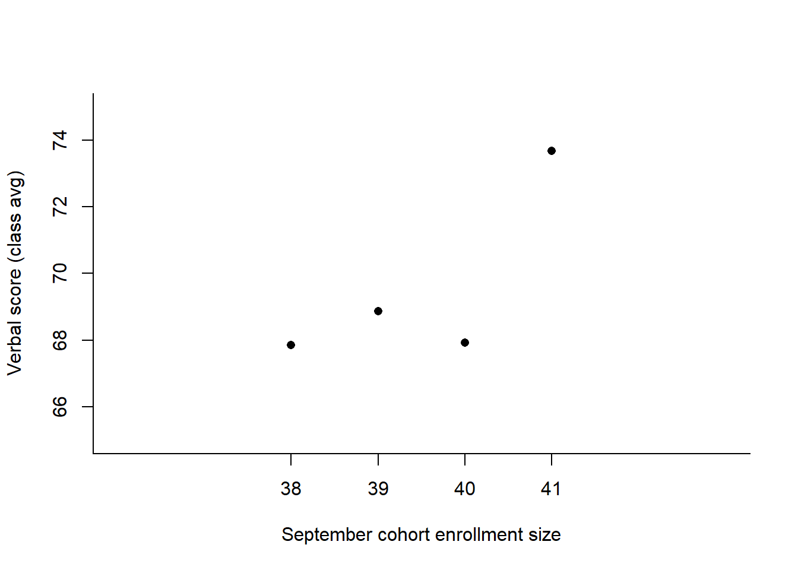
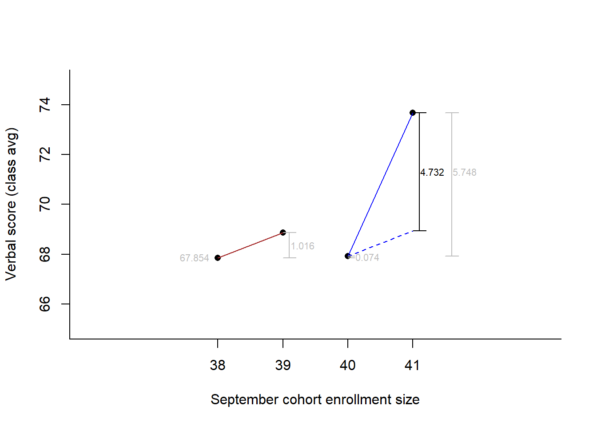
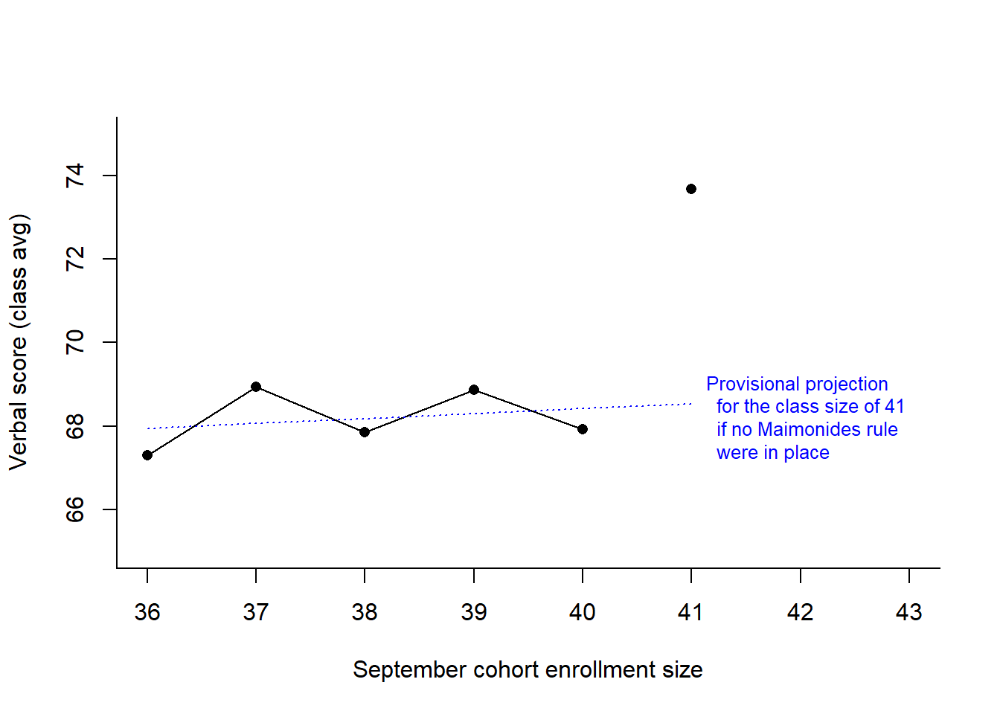
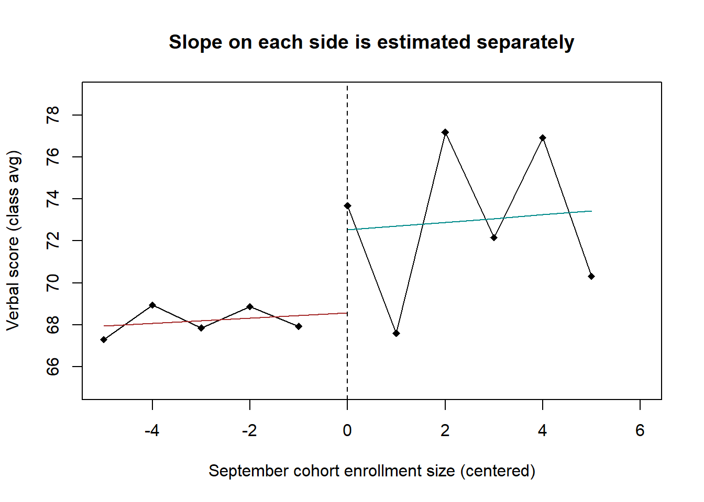
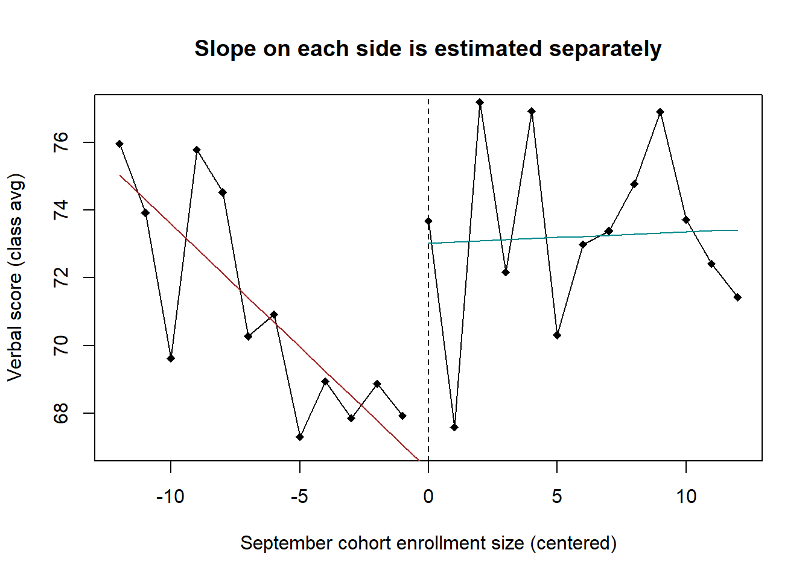
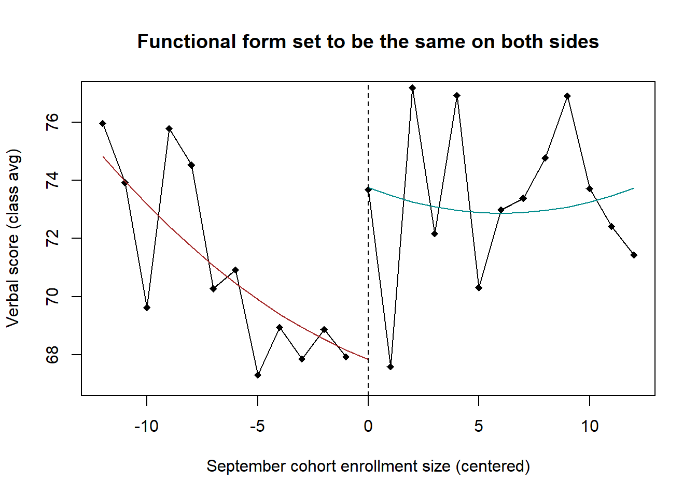
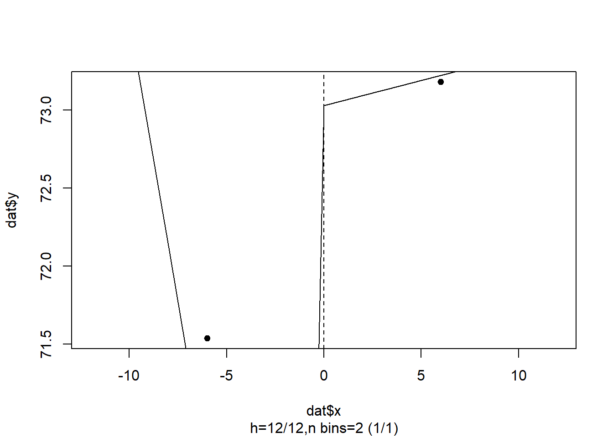
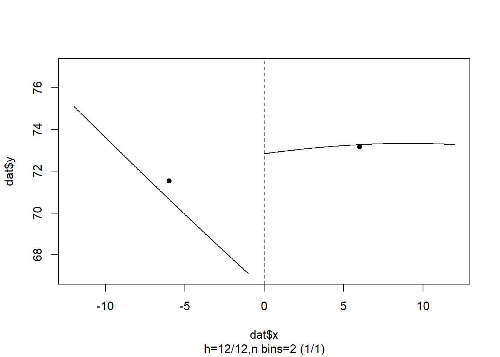
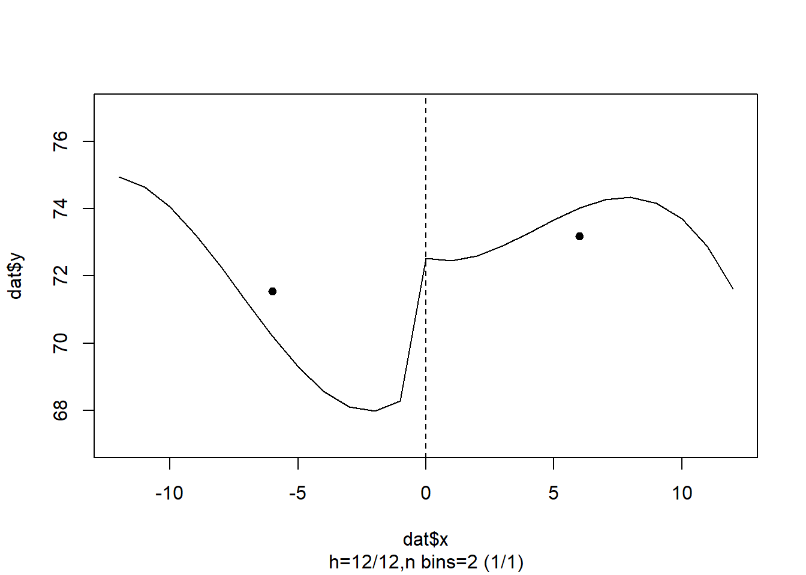
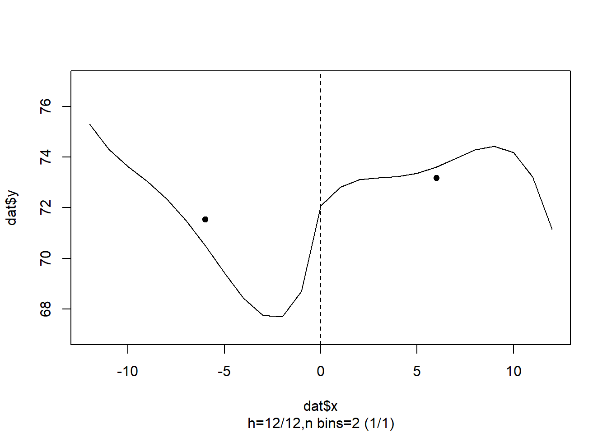

Part 6 Regression Discontinuity, Part 1
Chapter 9 of Murnane and Willett (2011) helps us see the underlying logic of regression discontinuity designs by helping us see the underlying assumptions and choices we face when we use a difference-in-differences strategy, and then taking us into an example with regression discontinuity in which we examine the functional form. Their chapter begins with several pedagogical examples of DID with the Maimonides data, which are from work conducted by Angrist and Lavy (1999) to investigate the effects of class size on achievement.
6.1 Objectives
- Strengthen our understanding of the underlying assumptions and choices in difference in differences.
- Use this understanding to see the value of regression discontinuity designs.
- Understand the decisions involved in a regression-discontinuity design, starting with functional form and bandwidth.
- Use R code to estimate effects and generate plots.
6.2 Import and Prepare the Data
The data were available as a SAS data set from UCLA’s site, which I had then saved to a CSV file Ch 09 angrist.csv using the following code.
library(sas7bdat) # package for reading SAS files
angrist <- read.sas7bdat("https://stats.idre.ucla.edu/wp-content/uploads/2016/02/angrist.sas7bdat")
write.csv(angrist,file = "Ch 09 angrist.csv",row.names = F)Let’s import the data.
ang <- read.csv("Ch 09 angrist.csv")
str(ang)## 'data.frame': 2019 obs. of 4 variables:
## $ read : num 58 82.6 46.3 66.6 75 ...
## $ size : int 8 9 9 9 10 10 10 10 11 11 ...
## $ intended_classize: num 8 9 9 9 10 10 10 10 11 11 ...
## $ observed_classize: int 8 9 9 11 10 10 10 10 11 17 ...And, let’s rename the columns:
names(ang) <- c("read","coh_size","int_size","obs_size")
head(ang)## read coh_size int_size obs_size
## 1 58.00 8 8 8
## 2 82.63 9 9 9
## 3 46.33 9 9 9
## 4 66.56 9 9 11
## 5 75.00 10 10 10
## 6 80.56 10 10 10Each row in the data frame is a classroom, which is the unit of analysis. Here’s a description of the columns:
readis the class’s reading-achievement score. This is the outcome variable, measured (we assume) at the end of the academic year.coh_sizeis the cohort size, which is the number of students during the enrollment period at the start of the academic year.int_sizeis the intended class size, per the Maimonides rule.obs_sizeis the observed class size later in the academic year.
The causal claim being investigated is whether the policy of splitting a large class into two smaller classes leads to higher reading achievement scores of the class.
Let’s make a group variable that represents the assignment variable based on Maimonides rule. Those cohorts containing over 40 students were split into two smaller classes and assigned to the small condition. We can think of the small status as being the treatment group, with small = 1 for classes that were made smaller, per the exogenous Maimonides assignment rule, and small = 0 for classes that were not made smaller.
ang$small <- ifelse(ang$coh_size > 40,1,0)Let’s center the forcing variable, coh_size, which helps us to interpret the intercept. This is discussed on pp. 178–180.
ang$csize <- ang$coh_size-41Let’s make a subset of the data that has cohort enrollment sizes between 36 and 46 students. This is to help us think through this demonstration. It also makes sense if we are examining the intent of the policy and its causal effect. Here, and in the rest of this code, we’re using the subset() function, but we could easily do this in other ways in R. Instead of that function, we could use indexing, such as ang[ang$coh_size >= 36 & ang$coh_size <= 46, ] to achieve the same result.
ang3646 <- subset(ang, coh_size >= 36 & coh_size <= 46)Let’s examine means of the classes’ reading scores by their enrollment size. We’ll use the aggregate() function to view this by cohort size. We looked at this in a previous section of this tutorial.
ReadByM <- aggregate(read ~ coh_size, data = ang3646, mean)
ReadByM## coh_size read
## 1 36 67.30445
## 2 37 68.94066
## 3 38 67.85400
## 4 39 68.87000
## 5 40 67.92847
## 6 41 73.67670
## 7 42 67.59560
## 8 43 77.17644
## 9 44 72.16160
## 10 45 76.91684
## 11 46 70.30814The following code creates Table 9.1 of Murnane and Willett.
There’s a lot in this code and you can skip over it to get to the meat of the lesson. Basically, we’re using the
table()function to get the number of observations at each cohort size. The output of that is a table, which we turn into a data frame. Because coh_size is a number but thetable()function turned it into a factor, we turn it back into a numeric type variable using theas.numeric(levels())line of code. We then calculate the mean size of the classes by each cohort size, withby(obs_size, coh_size, mean), which we make numeric and round. We identify what its treatment status is with theNominalSizevariable. The last two variables are the mean (across classes) and standard deviations (across classes) at each cohort size.
T9.1 <- as.data.frame(table(ang3646$coh_size))
names(T9.1) <- c("coh_size","freq")
T9.1$coh_size <- as.numeric(levels(T9.1$coh_size)) #Coercing the coh_size variable to be numeric instead of factor
T9.1$IntendedSize<- as.numeric(with(ang3646, by(int_size, coh_size, mean))) #The by() function to get the mean class size by each set of schools of cohort sizes 36 through 46
T9.1$ObservedSize<- round(as.numeric(with(ang3646, by(obs_size,coh_size, mean))),1)#The by() function again, also, rounded to 1 decimal place.
T9.1$NominalSize <- ifelse(T9.1$coh_size>40,"Small","Large") #Labeling schools that, by Maimonides Rule, split into two smaller classes (small)
T9.1$ReadByM <- round(as.numeric(with(ang3646, by(read,coh_size, mean))), 2)#Mean achievement by cohort (unit of analysis is classes, not students, so it's a mean among the classes' means)
T9.1$ReadBySD <- round(as.numeric(with(ang3646, by(read,coh_size, sd))), 2)
T9.1## coh_size freq IntendedSize ObservedSize NominalSize ReadByM ReadBySD
## 1 36 9 36.0 27.4 Large 67.30 12.36
## 2 37 9 37.0 26.2 Large 68.94 8.50
## 3 38 10 38.0 33.1 Large 67.85 14.04
## 4 39 10 39.0 31.2 Large 68.87 12.07
## 5 40 9 40.0 29.9 Large 67.93 7.87
## 6 41 28 20.5 22.7 Small 73.68 8.77
## 7 42 25 21.0 23.4 Small 67.60 9.30
## 8 43 24 21.5 22.1 Small 77.18 7.47
## 9 44 17 22.0 24.4 Small 72.16 7.71
## 10 45 19 22.5 22.7 Small 76.92 8.71
## 11 46 20 23.0 22.6 Small 70.31 9.786.3 Different Difference in Differences
6.3.1 Our first difference
And now for something completely different (well, maybe not completely). Here is a simple first-difference analysis, which M & W discussed on p. 170. Remember that this is a demonstration to help us think about RDD; it’s not the recommended analysis.
First, let’s subset our data to include only the first difference—the cohort sizes of 40 and 41. We can calculate the mean, by their treatment-group status.
ang4041 <- subset(ang, coh_size == 40|coh_size == 41)
with(ang4041, by(read, small, mean))## small: 0
## [1] 67.92847
## ------------------------------------------------------------
## small: 1
## [1] 73.6767Let’s fit a linear model on this, with \(\text{read} = \beta_0 + \beta_{1}\text{small} + \epsilon\) as our regression equation.
(fit4041 <- summary(lm(read ~ small, data = ang4041)))##
## Call:
## lm(formula = read ~ small, data = ang4041)
##
## Residuals:
## Min 1Q Median 3Q Max
## -18.3567 -4.6267 -0.3867 6.1533 15.5933
##
## Coefficients:
## Estimate Std. Error t value Pr(>|t|)
## (Intercept) 67.928 2.856 23.781 <2e-16 ***
## small 5.748 3.283 1.751 0.0888 .
## ---
## Signif. codes: 0 '***' 0.001 '**' 0.01 '*' 0.05 '.' 0.1 ' ' 1
##
## Residual standard error: 8.569 on 35 degrees of freedom
## Multiple R-squared: 0.08051, Adjusted R-squared: 0.05424
## F-statistic: 3.065 on 1 and 35 DF, p-value: 0.08877Note that M & W reported the p-value for a one-sided test but that the statistical test in our output is for the usual two-tailed test \(0.0888\), which is twice as large as what they reported. Usually, we do not report one-sided tests. In any case, if we really wanted to use code to get the one-sided p-value, we could get the estimate and the degrees of freedom from the output and put it inside the pt() function.
pt(-abs(fit4041$coefficients[2,3]), fit4041$df[2])## [1] 0.04438463We’re comparing two cohorts of observations—those on either side of the Maimonides assignment cut-point. If we were to think that no other variables beyond the treatment assignment variable (small) were explaining the difference in reading achievement, we might stop here. There may be a pre-existing relationship, a secular trend, between the forcing variable and the outcome variable. Citing the original authors of the study (Angrist & Lavy), M & W point out that socio-economic status (SES) seems to be related to cohort size, regardless (arguably) of the treatment status. In the population in their study, students living in rural communities are typically of lower SES and these rural communities tend to have smaller cohort sizes. Given that SES is typically related to academic achievement outcomes, there is good reason to believe there is a secular trend.
6.3.2 A plausible second difference
This part corresponds with Pages 172–173. We can roughly estimate this secular trend using the difference in means of cohorts of sizes 39 and 38, and subtract that from our first difference. Let’s subset the data to include these four cohorts and calculate the means of each. Note, that these two new cohorts are on the “control” side of the Maimonides assignment rule. Only one, of cohort size 41, was assigned to the treatment group.
ang3841 <- subset(ang,coh_size >= 38 & coh_size <= 41)
(ReadBy3841M <- aggregate(read ~ coh_size, data = ang3841, mean))## coh_size read
## 1 38 67.85400
## 2 39 68.87000
## 3 40 67.92847
## 4 41 73.67670We can use regression to estimate the difference in differences. Let’s create a new variable, called larger to distinguish the group with the larger enrollment within each pair. In this small example, the cohort with size 39 is larger than the cohort with 38. Likewise, the cohort of size 41 is larger than its counterpart of size 40. This variable is meant to capture the secular trend—that relationship between the forcing variable and reading achievement. This is the second difference.
ang3841$larger <- ifelse(ang3841$coh_size == 39 | ang3841$coh_size == 41, 1,0)For the first difference, we’ll also create a dummy variable, firstdiff. This is to distinguish the groups that participate in the first difference from those that are in the second difference.
ang3841$firstdiff<- ifelse(ang3841$coh_size >= 40, 1,0)We’re interested in \(\beta_3\) in
\[\begin{equation} \text{read} = \beta_0 + \beta_{1}\text{firstdiff} + \beta_{2}\text{larger} + \beta_{3}(\text{firstdiff } \times \text{ larger}) + \epsilon \text{.} \tag{6.1} \end{equation}\]
(fit3841 <- summary(lm(read ~ firstdiff*larger, data = ang3841)))##
## Call:
## lm(formula = read ~ firstdiff * larger, data = ang3841)
##
## Residuals:
## Min 1Q Median 3Q Max
## -33.054 -4.267 1.753 6.853 15.796
##
## Coefficients:
## Estimate Std. Error t value Pr(>|t|)
## (Intercept) 67.85400 3.26658 20.772 <2e-16 ***
## firstdiff 0.07447 4.74622 0.016 0.988
## larger 1.01600 4.61963 0.220 0.827
## firstdiff:larger 4.73223 6.08342 0.778 0.440
## ---
## Signif. codes: 0 '***' 0.001 '**' 0.01 '*' 0.05 '.' 0.1 ' ' 1
##
## Residual standard error: 10.33 on 53 degrees of freedom
## Multiple R-squared: 0.07056, Adjusted R-squared: 0.01795
## F-statistic: 1.341 on 3 and 53 DF, p-value: 0.2709The secular trend is purportedly captured by the second difference, which is estimated as \(\beta_{2} = 1.016\). The difference due to the policy is \(\beta_{3}\), estimated as \(4.732\), which has been adjusted for the 2nd difference. This is the same as Diff1 \(-\) Diff2, or \((73.677 - 67.928) - (68.87 - 67.854)\). The standard error is a little different from that in the book because we’re using regression rather than the direct estimate.
We could plot these two differences. As we had done in the previous part of this tutorial, we could create a new data set with the prototypical values, then use the predict() function on that data set to get the four points. Alternatively, we could plot the conditional means that we calculated from the aggregate() function.
mynewdat <- data.frame(firstdiff = c(0,0,1,1), larger = c(0,1,0,1))
preds <- predict(lm(read ~ firstdiff*larger, data = ang3841),
newdata = mynewdat)
par(bty = "l")
plot(x = 38:41,
y = preds,
type = "p",
xlim = c(36,43), ylim = c(65,75),
pch = 16,
xlab = "September cohort enrollment size",
ylab = "Verbal score (class avg)",
xaxt = "n")
axis(1, at = 38:41, labels = 38:41)
Let’s connect this plot to the regression model and its parameter estimates.
The intercept, \(\beta_0\), is
coef(fit3841)[1,1], which is the first point in our plot, because cohort 38 is coded asfirstdiff = 0andlarger = 0, making its predicted value \(\beta_0 + \beta_1(0) + \beta_2(0) + \beta_3(0 \times 0) = 67.854\).Cohort 39 is coded as
firstdiff = 0andlarger = 1, making its predicted value \(\beta_0 + \beta_1(0) + \beta_2(1) + \beta_3(0 \times 1)\), which iscoef(fit3841)[1,1]\(+\)coef(fit3841)[3,1]67.854 + 1.016 = 68.87.Cohort 40 is coded as
firstdiff = 1andlarger = 0, so its predicted score \(\beta_0 + \beta_1(1) + \beta_2(0) + \beta_3(1 \times 0)\), orcoef(fit3841)[1,1]\(+\)coef(fit3841)[2,1]= 67.854 + 0.074 = 67.928.Cohort 41 is coded as
firstdiff = 1andlarger = 1, which is \(\beta_0 + \beta_1(1) + \beta_2(1) + \beta_3(1 \times 1)\), which can be obtained withsum(coef(fit3841)[ ,1]), equaling \(73.677\).
These estimates reproduce the mean reading-achievement scores per cluster that are reported in Table 9.1 of Murnane and Willett.
We can reproduce the first difference from the regression parameters. This is Cohort 41 \(-\) Cohort 40, which is \[\Big(\beta_0 + \beta_1(1) + \beta_2(1) + \beta_3(1 \times 1)\Big) - \Big(\beta_0 + \beta_1(1) + \beta_2(0) + \beta_3(1 \times 0)\Big)\] \[ = \text{(sum(coef(fit3841)[ ,1]))} - \text{sum(coef(fit3841)[1:2,1])} = 5.748 \text{ .}\]
Again, our parameter of interest is \(\beta_3\), which is the effect of being in the treatment group versus not, after adjusting for the secular trend that we have estimated based on the difference in reading-achievement scores in a similar pair of cohorts. That is, we believe—at this point, before seeing the value of an RDD—that given the reading-achievement changes due to a 1 unit increase in cohort size in this similar comparison, we can trust that we can remove that from our first difference to estimate the effect that is central to our research question.
We can see below how the parameters place in the plot, along with the first difference:

6.3.3 Another plausible second difference
A problem with difference in differences with a data set like this is that there are many ways we could have estimated this second difference. For example, if we used a different pair of contiguous cohort sizes, such as cohorts of sizes 37 & 38, our second difference would be different \((67.85 - 68.94 = -1.09)\), as discussed on p. 175. Here’s another plausible example, with cohorts of sizes 36 through 40 for the secular trend versus the first difference. Let’s subset this part of the data and then plot the means.
ang3641 <- subset(ang,coh_size >= 36 & coh_size <= 41)
mread3640<- aggregate(read~coh_size, data = ang3641[ang3641$coh_size < 41, ], mean)
mread41 <- aggregate(read~coh_size, data = ang3641[ang3641$coh_size ==41, ], mean)The X and Y here are for printing the blue prediction line in the subsequet plot.
X <- c(36:41)
Y <- predict(lm(read ~ coh_size, data = mread3640),
newdata = data.frame(coh_size = X))Here’s the plot:
par(bty = "l")
with(mread3640,
plot(coh_size, read,
ylim = c(65,75), xlim = c(36,43),
pch = 16,
xlab = "September cohort enrollment size",
ylab = "Verbal score (class avg)",
lines(coh_size,read)))
lines(X,Y, col = "blue", lty = 3)
points(mread41, pch = 16)
text(41, Y[6] - .5, "Provisional projection\n for the class size of 41\n if no Maimonides rule\n were in place",
pos = 4,
col = "blue",
cex = .8)
Here’s the linear model of this DID, per Table 9.3 on page 180. Notice that we’re using the centered cohort size (csize), which is \(\text{coh_size}-41\), as our forcing variable. We had created this above with ang$csize <- ang$coh_size-41. This is so we can set the intercept at 41 (explained on pp. 178–180).
(fit3641 <- summary(lm(read ~ csize + small, data = ang3641)))##
## Call:
## lm(formula = read ~ csize + small, data = ang3641)
##
## Residuals:
## Min 1Q Median 3Q Max
## -33.385 -4.519 1.581 7.004 17.113
##
## Coefficients:
## Estimate Std. Error t value Pr(>|t|)
## (Intercept) 68.557 3.511 19.523 <2e-16 ***
## csize 0.124 1.068 0.116 0.908
## small 5.120 4.005 1.279 0.205
## ---
## Signif. codes: 0 '***' 0.001 '**' 0.01 '*' 0.05 '.' 0.1 ' ' 1
##
## Residual standard error: 10.19 on 72 degrees of freedom
## Multiple R-squared: 0.06624, Adjusted R-squared: 0.0403
## F-statistic: 2.554 on 2 and 72 DF, p-value: 0.08481Interpreting this model’s coefficients, we can see that if the cohort of size 41 were not split into 2 classes, its estimated achievement would be \(68.56\) (i.e., the intercept). This is our counterfactual. Being in a small class (e.g., of size 20 or 21 from a cohort of size 41), is estimated to have an effect of \(5.12\) points on the reading achievement test, but the standard error is large in comparison, \(4\). Recall from Table 9.1 that the cohort of size 41 has only 28 observations, so there’s not a lot to work with in regard to statistical power; also, the variance is pretty big, with \(SD = 8.77 \therefore Var = 8.77^2 = 76.9129\).
At this point, we are strictly speaking not using a difference-in-differences strategy, but something better. By including these five points before the cut-off, we are now getting a better estimate of the secular trend—specifically, one that is less affected by the idiosyncratic variation that otherwise would not have been noticed if we had used only a pair of points as a second difference.
6.4 Broadening the bandwidth
The fit3641 analysis did not use information on the right side of the discontinuity. It was a single point. Let’s use more information on the right side to see if we can better estimate the secular trend (the second difference). We can use this equation, which is from Equation 9.1 in Murnane and Willett (p. 179),
\[\begin{equation} \text{read} = \beta_0 + \beta_{1}\text{csize} + \beta_{2}\text{small} + \epsilon \text{.} \tag{6.2} \end{equation}\]
Here is Table 9.4 on page 183. Now, we’re using our data set that is represented in Table 9.1, with all cohorts from size 36 through 46.
fit3646 <- (lm(read ~ csize + small, data = ang3646))
(fit3646out <- summary(fit3646))
pt(-abs(fit3646out$coefficients[3,3]), fit3646out$df[2]) # one-tailed p-value##
## Call:
## lm(formula = read ~ csize + small, data = ang3646)
##
## Residuals:
## Min 1Q Median 3Q Max
## -33.384 -5.466 1.312 7.184 17.208
##
## Coefficients:
## Estimate Std. Error t value Pr(>|t|)
## (Intercept) 68.6957 1.9178 35.821 <2e-16 ***
## csize 0.1707 0.4360 0.391 0.696
## small 3.8472 2.8112 1.368 0.173
## ---
## Signif. codes: 0 '***' 0.001 '**' 0.01 '*' 0.05 '.' 0.1 ' ' 1
##
## Residual standard error: 9.674 on 177 degrees of freedom
## Multiple R-squared: 0.04579, Adjusted R-squared: 0.035
## F-statistic: 4.246 on 2 and 177 DF, p-value: 0.0158
##
## [1] 0.08644695We can see the effect is not statistically significant.
We can examine the plot of this analysis, along with the projected (counterfactual) estimate if the large-class cohorts’ classes were NOT split at size 41. First, let’s create mean points that we can use in the subsequent plot.
mread3640 <- aggregate(read ~ csize,
data = ang3646[ang3646$coh_size < 41, ], mean)
mread4146 <- aggregate(read ~ csize,
data = ang3646[ang3646$coh_size >= 41, ], mean)Let’s create the Xs and Ys to use in prediction lines in the subsequent plot. Here is the left side prediction (cohorts of size 36 to 40):
X3641 <- data.frame(csize = c(36:41-41)) #Note that the cohort size of 41 (csize = 0) is counterfactual.
X3641$small <- rep(0, length(X3641$csize) ) #Each observation is specified as being in the large-class grp.
Y3641 <- predict(fit3646, newdata = X3641) #Predicted avg reading score of the classHere’s the right side prediction (cohorts of size 41 to 46):
X4146 <- data.frame(csize = c(41:46-41))
X4146$small <- rep(1, length(X4146$csize) ) #Each observation is specified as being in the SMALL-class grp.
Y4146 <- predict(fit3646, newdata = X4146)Let’s create a regular plot with one of the groups. We’ll add the other group’s mean points, next.
par(bty = "l")
with(mread3640,
plot(csize, read,
ylim= c(65,79),
xlim= c(36,47)-41,
pch=18,
xlab = "September cohort enrollment size (centered)",
ylab = "Verbal score (class avg)",
main = "Slopes on both sides specified as equal",
lines(csize, read)))
lines(X3641$csize,Y3641, col="blue") # The linear fit of the observed "large" class group
points(mread4146$csize,mread4146$read,pch=18) # Mean estimates of cohort sizes of 41 to 46
lines(mread4146$csize,mread4146$read) # The linear fit of the observed "small" class group
lines(X4146$csize,Y4146, col="blue")
abline(v=0,h=NULL,lty=2)
It appears as though there is a discontinuity; however, the LATE of small was not statistically significant. This is a rudimentary regression discontinuity analysis.
6.5 Summary up to this point
This example was presented to illustrate how to think about regression discontinuity designs. The above analysis assumes that
- the secular relationship between cohort size and achievement is linear and
- this linearity is the same on both sides of the discontinuity.
This is an RDD. The forcing variable is the unit’s cohort size. The treatment variable is whether the unit was assigned to be in a small-class condition or a large-class condition, the latter being thought of as the control group in this example. The general model of this RDD is an ANCOVA,31
\[\begin{eqnarray} \text{Y}_i = \beta_0 + \beta_1\text{X}_{c_i} + \beta_2\text{Z}_i + \epsilon_i \text{ ,} \tag{6.3} \end{eqnarray}\]
with \(\text{X}_{c_i}\) representing unit \(i\)’s location on the centered forcing variable, and \(\text{Z}_i\) representing unit \(i\)’s treatment assignment.32
ANCOVA assumes that the residual variances are the same in the two levels of the treatment factor. In other words, it assumes that there is not an interaction term that would otherwise explain that variance. In our analysis, we would accept this model if we believed the functional form were the same slope on both sides of the forcing variable. We are also assuming that the functional form is linear.
In the next sections, we investigate three additional questions in RDD: Whether the functional form is the same on both sides of the equation, whether the functional form is curvilinear, and what bandwidth of the analysis we might use.
To investigate unequal functional form, we will include the interaction between the forcing variable and the treatment variable. To investigate curvilinear functional form, we will specify the forcing variable as quadratic, cubic, and so forth. To address bandwidth, we’ll first think about whether we would obtain the same conclusions if we extended the bandwidth. There are data-driven techniques for finding a so-called optimal bandwidth, using some optimizer techniques that are available in R packages, but ultimately our decision about which bandwidth to focus on rests with our understanding of the data and the context.
6.6 Examining if the results are consistent with different bandwidths
Table 9.5 on p. 184 presents a bunch of estimates from different analytic window widths. The following syntax produces the coefficients from these different widths:
summary(lm(read~csize + small, data = ang3641))
summary(lm(read~csize + small, data = subset(ang, coh_size>=35 & coh_size<=47))) #Analytic window of 6 cohort-size points on either side of the cut
summary(lm(read~csize + small, data = subset(ang, coh_size>=34 & coh_size<=48)))
summary(lm(read~csize + small, data = subset(ang, coh_size>=32 & coh_size<=50)))
summary(lm(read~csize + small, data = subset(ang, coh_size>=31 & coh_size<=51))) #Analytic window of 10 cohort-size points
summary(lm(read~csize + small, data = subset(ang, coh_size>=30 & coh_size<=52)))
summary(lm(read~csize + small, data = subset(ang, coh_size>=29 & coh_size<=53))) #Analytic window of 12 cohort-size pointsThis output is suppressed here. You could generate a table from each analysis using code such as this:
data.frame(BWidth = rep("36,41", 2), summary(lm(read~csize + small, data = ang3641))$coefficients[2:3,1:2])## BWidth Estimate Std..Error
## csize 36,41 0.1239759 1.068103
## small 36,41 5.1201262 4.004709The purpose of doing this is not for p-hacking. It is to see if our conclusions about the effects are stable across analyses that have different analytic window widths. We can think of this as a sensitivity analysis, given the varying bandwidths.
6.7 Functional Form in RDD
A second question we might have is whether permitting the difference in slope on the two sides of the discontinuity will yield a more precise estimate of the effect. The formula for this adds an interaction term to what is now a general linear model:33
\[\begin{eqnarray} \text{Y}_i = \beta_0 + \beta_1\text{X}_{c_i} + \beta_2\text{Z}_i + \beta_{3}(\text{X}_{c_i} \times \text{Z}_i) + \epsilon_i \text{ ,} \tag{6.4} \end{eqnarray}\]
which with our data set is represented by this equation:
\[\text{read}_i = \beta_0 + \beta_{1}\text{csize}_i + \beta_{2}\text{small}_i + \beta_{3}(\text{csize}_i \times \text{small}_i) + \epsilon_i \text{.}\]
with \(i\) being the unit of analysis—each row in the data set, each of which is a classroom.
This is equivalent to Equation 9.6 in our Chapter, but applied to the Angrist data (instead of the Head Start data). Note that it differs from the previous analysis (Eq. 9.1 in the book) in that it allows the right- and left-side slopes to differ. We’re still interested in the parameter, small, but now it is estimated after controlling for the difference in slopes, as captured by the small:size interaction.
fitslopes3646 <- lm(read ~ csize*small, ang3646)
(fitslopes3646out <- summary(fitslopes3646))##
## Call:
## lm(formula = read ~ csize * small, data = ang3646)
##
## Residuals:
## Min 1Q Median 3Q Max
## -33.385 -5.474 1.299 7.181 17.186
##
## Coefficients:
## Estimate Std. Error t value Pr(>|t|)
## (Intercept) 68.55657 3.34377 20.503 <2e-16 ***
## csize 0.12398 1.01708 0.122 0.903
## small 3.96239 3.61685 1.096 0.275
## csize:small 0.05729 1.12648 0.051 0.959
## ---
## Signif. codes: 0 '***' 0.001 '**' 0.01 '*' 0.05 '.' 0.1 ' ' 1
##
## Residual standard error: 9.701 on 176 degrees of freedom
## Multiple R-squared: 0.0458, Adjusted R-squared: 0.02953
## F-statistic: 2.816 on 3 and 176 DF, p-value: 0.04067Notice that the R2 of the two models is the same and that the estimate of the interaction between the forcing variable and the treatment is very small in comparison to its standard error (thereby yielding a low test statistic).
6.7.1 Plotting the two sides, allowing different slopes
Let’s plot this analysis. Most of the code here is the same as the previous plot. The difference is in the model used for the predictions (Y3641M2 and Y4146M2) and in the resulting line plots.
Here is the left-side prediction, where each observation is specified as being in the large-class group (the control condition). Note that the cohort size of 41 is included even though it was in the treatment condition (small = 1) in the real data; here, we’re modeling its counterfactual—what the model predicts its reading achievement to be if it were in the control group.
X3641 <- data.frame(csize=c(36:41 - 41))
X3641$small <- rep(0, length(X3641$csize) ) # Each observation is specified as being in the control group
Y3641M2 <- predict(fitslopes3646,
newdata = X3641)Here is the right-side prediction, where each observation is specified as being in the small-class group (the treatment condition).
X4146 <- data.frame(csize=c(41:46-41)) # (Note that the cohort size of 41 (csize = 0) is counterfactual)
X4146$small <- rep(1, length(X4146$csize) ) # Each observation is specified as being in the treatment group
Y4146M2 <-predict(fitslopes3646, newdata=X4146) Let’s plot these two sides. To plot the points, we’re using mread3640, which we had created above using the aggregate() function.
with(mread3640,
plot(csize, read,
ylim = c(65,79), xlim = c(36,47)-41,
pch=18,
xlab = "September cohort enrollment size (centered)",
ylab = "Verbal score (class avg)",
main = "Slope on each side is estimated separately",
lines(csize,read)))
lines(X3641$csize,Y3641M2, col = "brown") #Now, the linear fit of the observed "large" class group
points(mread4146$csize,mread4146$read, pch = 18) #Mean estimates of cohort sizes of 41 to 46
lines(mread4146$csize,mread4146$read) #The linear fit of the observed "small" class group
lines(X4146$csize,Y4146M2, col="darkcyan")
abline(v=0,h=NULL,lty=2)
It appears as though including the varying slopes changes the graph only slightly, which makes sense because the csize:small interaction \((\beta_3)\) was tiny, and the R2 of the two models was the same. We should stick with the simpler equation if we plan to use this analytic window (36 to 46) for our analysis.
6.7.2 Broader analytic windows
What about that broader bandwidth from sizes 29 to 53? Let’s create a subsample for this analysis:
ang2953 <- subset(ang, coh_size >= 29 & coh_size <= 53)Let’s fit a linear model, with the same slope on both sides:
fit2953 <- lm(read~ csize + small,data=ang2953)
(fit2953out <- summary(fit2953))##
## Call:
## lm(formula = read ~ csize + small, data = ang2953)
##
## Residuals:
## Min 1Q Median 3Q Max
## -35.736 -5.880 1.698 6.682 18.630
##
## Coefficients:
## Estimate Std. Error t value Pr(>|t|)
## (Intercept) 70.1188 1.1512 60.908 <2e-16 ***
## csize -0.1392 0.1191 -1.168 0.2433
## small 3.9531 1.7996 2.197 0.0286 *
## ---
## Signif. codes: 0 '***' 0.001 '**' 0.01 '*' 0.05 '.' 0.1 ' ' 1
##
## Residual standard error: 9.182 on 420 degrees of freedom
## Multiple R-squared: 0.01456, Adjusted R-squared: 0.009869
## F-statistic: 3.103 on 2 and 420 DF, p-value: 0.04594And, let’s fit a linear model, with slopes free to differ on both sides:
fitslopes2953 <- lm(read ~ csize*small, data = ang2953)
(fitslopes2953out <- summary(fitslopes2953))##
## Call:
## lm(formula = read ~ csize * small, data = ang2953)
##
## Residuals:
## Min 1Q Median 3Q Max
## -33.710 -5.954 1.711 6.735 17.272
##
## Coefficients:
## Estimate Std. Error t value Pr(>|t|)
## (Intercept) 66.3361 1.8160 36.529 < 2e-16 ***
## csize -0.7246 0.2484 -2.917 0.00372 **
## small 6.6924 2.0582 3.252 0.00124 **
## csize:small 0.7570 0.2824 2.680 0.00764 **
## ---
## Signif. codes: 0 '***' 0.001 '**' 0.01 '*' 0.05 '.' 0.1 ' ' 1
##
## Residual standard error: 9.115 on 419 degrees of freedom
## Multiple R-squared: 0.03117, Adjusted R-squared: 0.02424
## F-statistic: 4.494 on 3 and 419 DF, p-value: 0.004058This bandwidth is probably not the most appropriate but these results help us to see how the estimates and functional forms can differ.34
6.7.2.1 Curvilinear functional form
Using this same really broad analytic window, let’s check out a quadratic model, again allowing each side to have a different functional form. The quadratic model has this equation:
\[\begin{eqnarray} \text{Y}_i = \beta_0 + \beta_{1}\text{X}_{c_i} + \beta_{2}\text{Z}_i + \beta_{3}\text{X}_{c_i}^2 + \beta_{4}\text{X}_{c_i}\text{Z}_i + \beta_{5}\text{X}_{c_i}^2\text{Z}_i + \epsilon_i \text{ ,} \tag{6.5} \end{eqnarray}\]
which with our variables, is this:
\[\begin{eqnarray} \text{read}_i = \beta_0 + \beta_{1}\text{csize}_i + \beta_{2}\text{small}_i + \beta_{3}\text{csize}_i^2 + \beta_{4}(\text{csize}_i \times \text{small}_i) + \beta_{5}(\text{csize}_i^2 \times \text{small}_i) + \epsilon_i \end{eqnarray}\]
In the lm() function, notice that we’re using the I() function in the formula, as in I(csize^2). This tells R to first calculate the stuff within it before using it as a variable in the formula. We could achieve the same result if we added a new column to the data, such as ang2953$csize_squared <- csize^2 and used that new variable in the formula, such as read ~ csize*small + csize_squared*small.
fitslopesQ2953 <- lm(read ~ csize*small + I(csize^2)*small, data=ang2953)
(fitslopesQ2953out <- summary(fitslopesQ2953))##
## Call:
## lm(formula = read ~ csize * small + I(csize^2) * small, data = ang2953)
##
## Residuals:
## Min 1Q Median 3Q Max
## -33.732 -5.993 1.578 6.818 17.877
##
## Coefficients:
## Estimate Std. Error t value Pr(>|t|)
## (Intercept) 67.22345 3.05881 21.977 <2e-16 ***
## csize -0.35030 1.06771 -0.328 0.743
## small 4.66865 3.31609 1.408 0.160
## I(csize^2) 0.02865 0.07947 0.360 0.719
## csize:small 1.03562 1.17885 0.878 0.380
## small:I(csize^2) -0.08325 0.08908 -0.935 0.351
## ---
## Signif. codes: 0 '***' 0.001 '**' 0.01 '*' 0.05 '.' 0.1 ' ' 1
##
## Residual standard error: 9.115 on 417 degrees of freedom
## Multiple R-squared: 0.03573, Adjusted R-squared: 0.02417
## F-statistic: 3.09 on 5 and 417 DF, p-value: 0.009437Let’s look at a cubic form on each side:
fitslopesC2953 <- lm(read~ csize*small + I(csize^2)*small + I(csize^3)*small, data=ang2953)
(fitslopesC2953out <- summary(fitslopesC2953))##
## Call:
## lm(formula = read ~ csize * small + I(csize^2) * small + I(csize^3) *
## small, data = ang2953)
##
## Residuals:
## Min 1Q Median 3Q Max
## -33.310 -6.220 1.487 6.790 18.517
##
## Coefficients:
## Estimate Std. Error t value Pr(>|t|)
## (Intercept) 69.10337 4.94856 13.964 <2e-16 ***
## csize 1.09145 3.16680 0.345 0.731
## small 3.41951 5.17035 0.661 0.509
## I(csize^2) 0.29417 0.55472 0.530 0.596
## I(csize^3) 0.01356 0.02804 0.484 0.629
## csize:small -1.28851 3.38419 -0.381 0.704
## small:I(csize^2) -0.15580 0.60455 -0.258 0.797
## small:I(csize^3) -0.02425 0.03096 -0.783 0.434
## ---
## Signif. codes: 0 '***' 0.001 '**' 0.01 '*' 0.05 '.' 0.1 ' ' 1
##
## Residual standard error: 9.127 on 415 degrees of freedom
## Multiple R-squared: 0.03781, Adjusted R-squared: 0.02158
## F-statistic: 2.33 on 7 and 415 DF, p-value: 0.024296.7.2.2 Comparing models with different functional forms
Let’s examine fit statistics to see which functional form fits best. We can compare models with the AIC() and BIC() functions. With the Akaike information criterion (AIC) and Bayesian version (BIC), lower implies less error, and better fit. The Bayesian version is useful to see if the results are the same as in the AIC.
AIC(fit2953,fitslopes2953,fitslopesQ2953,fitslopesC2953) ## df AIC
## fit2953 4 3081.155
## fitslopes2953 5 3075.964
## fitslopesQ2953 7 3077.970
## fitslopesC2953 9 3081.056BIC(fit2953,fitslopes2953,fitslopesQ2953,fitslopesC2953) ## df BIC
## fit2953 4 3097.345
## fitslopes2953 5 3096.201
## fitslopesQ2953 7 3106.301
## fitslopesC2953 9 3117.483It looks like the model with different linear slopes on each side, fitslopes2953, fits the best with this broad window of data. (Again, this bandwidth might not be the most appropriate.)
6.7.2.3 Plotting the model
We can estimate the means in each cohort size, again using the aggregate() function. This is valuable for plotting.
mread2940 <- aggregate(read~csize, data=ang2953[ang2953$coh_size< 41,], mean)
mread4153 <- aggregate(read~csize, data=ang2953[ang2953$coh_size>=41,], mean)Let’s plot the model: First, let’s create an object that specifies which model to use in the plot. We can toggle between linear, quadratic, and cubic models to see their plots by commenting out the the models we don’t want.
MYMODEL <- fitslopes2953 #Linear (est.separately on each side)
#MYMODEL<- fitslopesQ2953 #Quadratic
#MYMODEL<- fitslopesC2953 #CubicLeft side prediction:
X2941 <- data.frame(csize = c(29:41-41)) # Remember, we're centering the cohort size
X2941$small <- rep(0, length(X2941$csize) )
Y2941 <- predict(MYMODEL, newdata=X2941) # Change the "Q" to a "C" in the model name,fitslopesQ2953, and rerun it to see the Cubic plotRight side prediction:
X4153 <- data.frame(csize=c(41:53-41))
X4153$small <- rep(1, length(X4153$csize) )
Y4153 <-predict(MYMODEL, newdata=X4153) #Change the "Q" to a "C" in the model name,fitslopesQ2953, and rerun it to see the Cubic plotwith(mread2940,
plot(csize,read,
ylim = c(67,77), xlim= c(29,53)-41,pch=18,
xlab = "September cohort enrollment size (centered)",
ylab="Verbal score (class avg)",
main = "Slope on each side is estimated separately",
lines(csize,read)))
lines(X2941$csize,Y2941, col="brown") #Now, the fit of the observed "large classes" group
points(mread4153$csize,mread4153$read,pch=18) #Mean estimates of "small classes" group
lines(mread4153$csize,mread4153$read) #The prediction line of the observed "small" class group
lines(X4153$csize,Y4153, col="darkcyan")
abline(v=0,h=NULL,lty=2)
6.7.2.4 Assuming the same functional form on both sides
Just as we had done earlier with the smaller bandwidth, we could impose the same functional form on both sides of the cutoff. This is easier to interpret than in models that allow differ shapes on either side because we are assuming that the underlying secular trend is unaffected by assignment to control or treatment group. For the quadratic model, we can remove the interactions:
\[\begin{eqnarray} \text{Y}_i = \beta_0 + \beta_{1}\text{X}_{c_i} + \beta_{2}\text{Z}_i + \beta_{3}\text{X}_{c_i}^2 + \epsilon_i \text{ ,} \tag{6.6} \end{eqnarray}\]
which, with our data, is
\[\begin{eqnarray} \text{read}_i = \beta_0 + \beta_{1}\text{csize}_i + \beta_{2}\text{small}_i + \beta_{3}\text{csize}_i^2 + \epsilon_i \text{.} \end{eqnarray}\]
fitslopesQ2953_same <- lm(read ~ csize + small + I(csize^2), data=ang2953)
(fitslopesQ2953out_same <- summary(fitslopesQ2953_same))##
## Call:
## lm(formula = read ~ csize + small + I(csize^2), data = ang2953)
##
## Residuals:
## Min 1Q Median 3Q Max
## -34.137 -5.769 1.748 6.639 17.466
##
## Coefficients:
## Estimate Std. Error t value Pr(>|t|)
## (Intercept) 67.84722 1.53096 44.317 < 2e-16 ***
## csize -0.29096 0.13659 -2.130 0.03375 *
## small 5.89445 1.99023 2.962 0.00323 **
## I(csize^2) 0.02415 0.01080 2.237 0.02580 *
## ---
## Signif. codes: 0 '***' 0.001 '**' 0.01 '*' 0.05 '.' 0.1 ' ' 1
##
## Residual standard error: 9.138 on 419 degrees of freedom
## Multiple R-squared: 0.02619, Adjusted R-squared: 0.01922
## F-statistic: 3.757 on 3 and 419 DF, p-value: 0.01102X2941 <- data.frame(csize = c(29:41-41))
X2941$small <- rep(0, length(X2941$csize) )
Y2941 <- predict(fitslopesQ2953_same, newdata = X2941) Right side prediction:
X4153 <- data.frame(csize=c(41:53-41))
X4153$small <- rep(1, length(X4153$csize) )
Y4153 <- predict(fitslopesQ2953_same, newdata = X4153) with(mread2940,
plot(csize, read,
ylim = c(67,77), xlim= c(29,53)-41,pch=18,
xlab = "September cohort enrollment size (centered)",
ylab="Verbal score (class avg)",
main = "Functional form set to be the same on both sides",
lines(csize,read)))
lines(X2941$csize,Y2941, col="brown") #Now, the fit of the observed "large classes" group
points(mread4153$csize,mread4153$read,pch=18) #Mean estimates of "small classes" group
lines(mread4153$csize,mread4153$read) #The prediction line of the observed "small" class group
lines(X4153$csize,Y4153, col="darkcyan")
abline(v=0,h=NULL,lty=2)
If this bandwidth made sense for the story of our data, and if we could argue that the secular trend is the same on both sides of the cutpoint, this might be the model we focus on in our analysis and reporting of our study. We could compare this to our earlier best-fitting model, fitslopes2953 to see if the deviance from the observed data is less.
AIC(fitslopes2953 , fitslopesQ2953_same)## df AIC
## fitslopes2953 5 3075.964
## fitslopesQ2953_same 5 3078.133The linear model, with different slopes on either side, still seems to have a slightly better fit than this quadratic model with the same slope on either side.
6.8 Using the rddtools Package
Let’s compare our results with those of a package, rddtools.
The rddtools package (Stigler & Quast, 2021) can provide parametric (and non-parametric) analyses.
Our “by-hand” analysis above were parametric. We can use help(package = "rddtools") to read about the package.
library(rddtools)First, we specify the rdd_object, which captures the data, the outcome (reading achievement), the forcing variable (centered cohort size), and the cut-off score on this variable.
dat_rddtools <- rdd_data(y = read, x = csize,
data = ang2953,
cutpoint = 0 )Then, we can use this object in analyses. The default functional form is linear (specified as polynomial order of 1).
(rddtools_L2953 <- rdd_reg_lm(dat_rddtools)) ## ### RDD regression: parametric ###
## Polynomial order: 1
## Slopes: separate
## Number of obs: 423 (left: 115, right: 308)
##
## Coefficient:
## Estimate Std. Error t value Pr(>|t|)
## D 6.6924 2.0582 3.2516 0.00124 **
## ---
## Signif. codes: 0 '***' 0.001 '**' 0.01 '*' 0.05 '.' 0.1 ' ' 1summary(rddtools_L2953) ##
## Call:
## lm(formula = y ~ ., data = dat_step1, weights = weights)
##
## Residuals:
## Min 1Q Median 3Q Max
## -33.710 -5.954 1.711 6.735 17.272
##
## Coefficients:
## Estimate Std. Error t value Pr(>|t|)
## (Intercept) 66.3361 1.8160 36.529 < 2e-16 ***
## D 6.6924 2.0582 3.252 0.00124 **
## x -0.7246 0.2484 -2.917 0.00372 **
## x_right 0.7570 0.2824 2.680 0.00764 **
## ---
## Signif. codes: 0 '***' 0.001 '**' 0.01 '*' 0.05 '.' 0.1 ' ' 1
##
## Residual standard error: 9.115 on 419 degrees of freedom
## Multiple R-squared: 0.03117, Adjusted R-squared: 0.02424
## F-statistic: 4.494 on 3 and 419 DF, p-value: 0.004058We see that this is identical to our previous “by-hand” linear analysis, the coefficients of which are easy to get:
coef(fitslopes2953out)## Estimate Std. Error t value Pr(>|t|)
## (Intercept) 66.3361486 1.8159652 36.529416 2.572799e-132
## csize -0.7246366 0.2483847 -2.917396 3.719580e-03
## small 6.6924236 2.0581708 3.251637 1.240174e-03
## csize:small 0.7570453 0.2824445 2.680333 7.644987e-03We can plot the object.35
plot(rddtools_L2953)## [1] "Mass points detected in the running variable."
This does not look pretty. We can adjust the limits on the Y axis.
plot(rddtools_L2953, ylim = c(67,77))## [1] "Mass points detected in the running variable."This shows the linear trends on both sides, similar to our hand-made plot above (though not as pretty, yeah).
6.8.1 Examining the bandwidth identified by the package
We can use the package’s rdd_bw_ik() function to look at the bandwidth it used. This applies the Imbens-Kalyanaraman (IK) optimal bandwidth calculation to our design. With our linear model, it is a bandwidth of 9.706.
np_bw2953 <- rdd_bw_ik(dat_rddtools)
(np_2953 <- rdd_reg_np(dat_rddtools)) # seems to default to IK BW, so don't need to specify it## ### RDD regression: nonparametric local linear###
## Bandwidth: 9.705921
## Number of obs: 315 (left: 88, right: 227)
##
## Coefficient:
## Estimate Std. Error z value Pr(>|z|)
## D 5.4711 2.3016 2.3771 0.01745 *
## ---
## Signif. codes: 0 '***' 0.001 '**' 0.01 '*' 0.05 '.' 0.1 ' ' 1plot(np_2953, ylim = c(67,77))## [1] "Mass points detected in the running variable."
We can look at a quadratic functional form, which is the 2nd polynomial, specified by the order = 2 argument.
(rddtools_Q2953<- rdd_reg_lm(dat_rddtools, order = 2)) # Polynomial order of 2 (quadratic)## ### RDD regression: parametric ###
## Polynomial order: 2
## Slopes: separate
## Number of obs: 423 (left: 115, right: 308)
##
## Coefficient:
## Estimate Std. Error t value Pr(>|t|)
## D 4.6686 3.3161 1.4079 0.1599summary(rddtools_Q2953)##
## Call:
## lm(formula = y ~ ., data = dat_step1, weights = weights)
##
## Residuals:
## Min 1Q Median 3Q Max
## -33.732 -5.993 1.578 6.818 17.877
##
## Coefficients:
## Estimate Std. Error t value Pr(>|t|)
## (Intercept) 67.22345 3.05881 21.977 <2e-16 ***
## D 4.66865 3.31609 1.408 0.160
## x -0.35030 1.06771 -0.328 0.743
## `x^2` 0.02865 0.07947 0.360 0.719
## x_right 1.03562 1.17885 0.878 0.380
## `x^2_right` -0.08325 0.08908 -0.935 0.351
## ---
## Signif. codes: 0 '***' 0.001 '**' 0.01 '*' 0.05 '.' 0.1 ' ' 1
##
## Residual standard error: 9.115 on 417 degrees of freedom
## Multiple R-squared: 0.03573, Adjusted R-squared: 0.02417
## F-statistic: 3.09 on 5 and 417 DF, p-value: 0.009437This is identical to our previous “by-hand” quadratic analysis:
coef(fitslopesQ2953out)## Estimate Std. Error t value Pr(>|t|)
## (Intercept) 67.22345312 3.05881484 21.9769605 1.164138e-71
## csize -0.35029844 1.06770784 -0.3280845 7.430124e-01
## small 4.66864898 3.31609410 1.4078759 1.599128e-01
## I(csize^2) 0.02864702 0.07946673 0.3604908 7.186627e-01
## csize:small 1.03561594 1.17885184 0.8784954 3.801808e-01
## small:I(csize^2) -0.08325231 0.08907855 -0.9345943 3.505383e-01Here’s the plot:
plot(rddtools_Q2953, ylim = c(67,77))## [1] "Mass points detected in the running variable."Here is the cubic function, specified with the third polynomial argument, order = 3.
(rddtools_C2953<- rdd_reg_lm(dat_rddtools,order = 3))## ### RDD regression: parametric ###
## Polynomial order: 3
## Slopes: separate
## Number of obs: 423 (left: 115, right: 308)
##
## Coefficient:
## Estimate Std. Error t value Pr(>|t|)
## D 3.4195 5.1704 0.6614 0.5087summary(rddtools_C2953) ##
## Call:
## lm(formula = y ~ ., data = dat_step1, weights = weights)
##
## Residuals:
## Min 1Q Median 3Q Max
## -33.310 -6.220 1.487 6.790 18.517
##
## Coefficients:
## Estimate Std. Error t value Pr(>|t|)
## (Intercept) 69.10337 4.94856 13.964 <2e-16 ***
## D 3.41951 5.17035 0.661 0.509
## x 1.09145 3.16680 0.345 0.731
## `x^2` 0.29417 0.55472 0.530 0.596
## `x^3` 0.01356 0.02804 0.484 0.629
## x_right -1.28851 3.38419 -0.381 0.704
## `x^2_right` -0.15580 0.60455 -0.258 0.797
## `x^3_right` -0.02425 0.03096 -0.783 0.434
## ---
## Signif. codes: 0 '***' 0.001 '**' 0.01 '*' 0.05 '.' 0.1 ' ' 1
##
## Residual standard error: 9.127 on 415 degrees of freedom
## Multiple R-squared: 0.03781, Adjusted R-squared: 0.02158
## F-statistic: 2.33 on 7 and 415 DF, p-value: 0.02429plot(rddtools_C2953, ylim = c(67,77))## [1] "Mass points detected in the running variable."
We can go quartic, too.
(rddtools_Qartic2953<- rdd_reg_lm(dat_rddtools,order=4)) ## ### RDD regression: parametric ###
## Polynomial order: 4
## Slopes: separate
## Number of obs: 423 (left: 115, right: 308)
##
## Coefficient:
## Estimate Std. Error t value Pr(>|t|)
## D 0.86636 8.00874 0.1082 0.9139plot(rddtools_Qartic2953, ylim = c(67,77))## [1] "Mass points detected in the running variable."
Using the AIC() function, we can compare the models to see which provides a better fit to the data.
AIC(rddtools_L2953,
rddtools_Q2953,
rddtools_C2953,
rddtools_Qartic2953)## df AIC
## rddtools_L2953 5 3075.964
## rddtools_Q2953 7 3077.970
## rddtools_C2953 9 3081.056
## rddtools_Qartic2953 11 3084.412It looks like the linear model fits best. But, IES and other funding agencies recommend non-parametric estimates of the functional form, so we could use both. Also, again, this bandwidth in this extended portion of this demostration might not be the most appropriate.
References
For some readers, you might be more used to seeing ANCOVA with the treatment variable first and the centered forcing variable second, as in \(\text{Y}_i = \beta_0 + \beta_1Z_i + \beta_2(X_i - X_c) + \epsilon_i \text{ .}\), which is an equivalent specification.↩︎
Forcing variables are also called assignment variables and running variables depending on the discipline. They are what are used to assign units to the treatment condition. It’s important to distinguish the variable used to assign people to levels of \(Z\) (in this equation, \(X\)) from the variable that results from this assignment mechanism, \(Z\). In an earlier chapter, \(Z\) was called an assignment variable because it was the result of the assignment process. In a simple RDD, the forcing variable is continuous and the treatment-assignment variable is binary, coded as \(0\) or \(1\).↩︎
Earlier in Equation (6.3)—before we included the interaction—we called this an ANCOVA.↩︎
At this broad bandwidth (with cohorts of size 29 to 40 on the control-group side and of size 41 to 53 on the treatment-group size), with this data set, there appears to be more complexity in the secular trend. At a narrow bandwidth (from cohorts of size 36 to 40 in the control and from 41 to 36 in the treatment), we can account for the trend that might occur because of SES and its tendency to be lower in schools with smaller cohorts (and therefore a slight upward slope as cohorts get larger). If we look at the broad bandwidth, we see a downward slope. This might be because smaller cohorts have, well, smaller classes, which in turn translates into higher teacher-student ratios and perhaps higher scores. If we had looked at a bandwidth that was between these two—such as a medium bandwidth—we might find that a curvilinear model form fits better than an a linear one even though with the broad bandwidth and with the narrow bandwidth, a linear form fits.↩︎
Ignore the message from the plot that says
"Mass points detected in the running variable."It seems to be a bug.↩︎